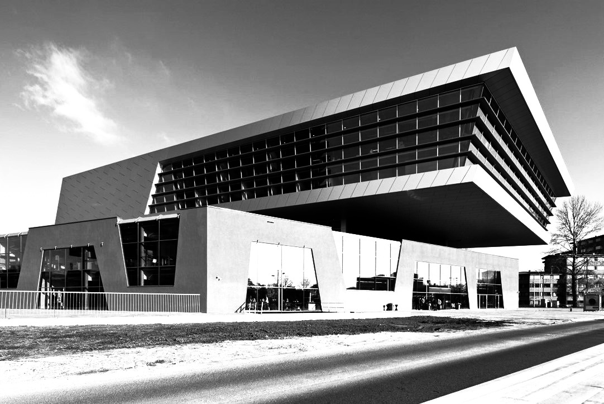
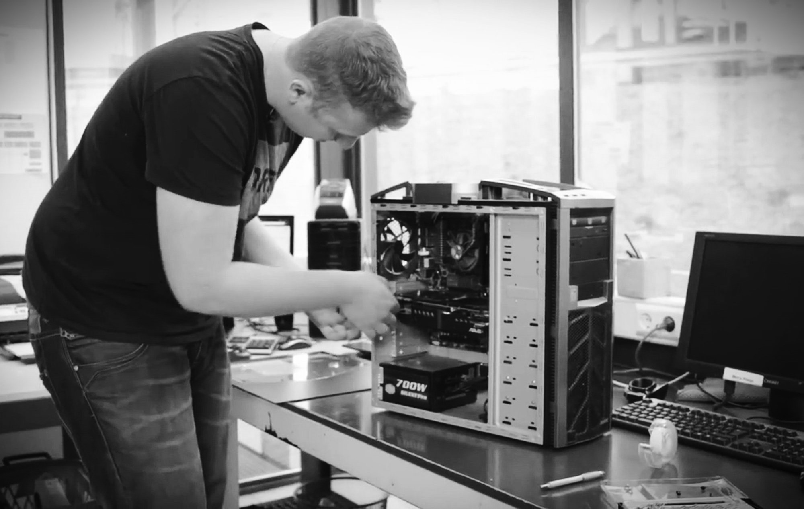
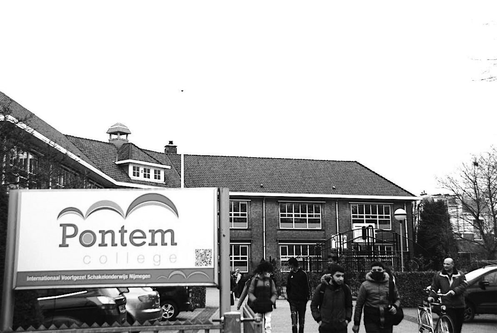

Software Developer

Ik studeer software developer aan het ROC Nijmegen en dit is mijn eerste jaar in de opleiding. Ik heb twee jaar taalleerervaring in Nederland, één jaar mbo niveau 1 en twee jaar mbo niveau 2. Dit is mijn 6e jaar in Nederland, voordat ik naar Nederland kwam heb ik in China op de hoge middelbare school gezeten.
ICT Medewerker

Ik heb mijn mbo niveau 2 ICT medewerker diploma gehaald bij Kw1c school. Het was een tweejarige opleiding. Mijn eerste jaar liep ik stage bij de ICT helpdesk op school en mijn tweede jaar liep ik stage bij een mobiele telefoonwinkel.
Assistent bouwen

Pontem College

Toen ik voor het eerst naar Nederland kwam, deed ik een tweejarige taalcursus aan het Pontem College, waar de inhoud veel makkelijker was dan in China en de leraren erg vriendelijk waren. Al met al heb ik twee hele leuke jaren gehad.
Chinese middelbare school